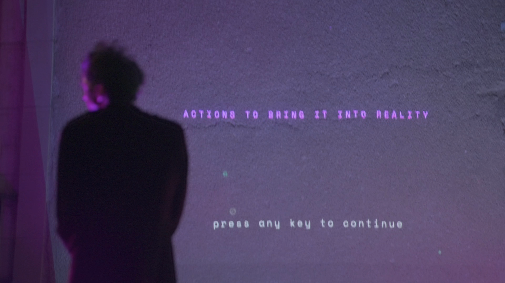

Abductive Pathways
a machine for co-creating futures
scroll
a machine for co-creating futures
An interactive installation using the structure of a 20-questions game to perform a collective act of speculation. Each yes/no answer creates a space of possible futures. What emerges is a hyperstition - a future that begins to feel actionable - along with concrete rituals for bringing it into the present.

